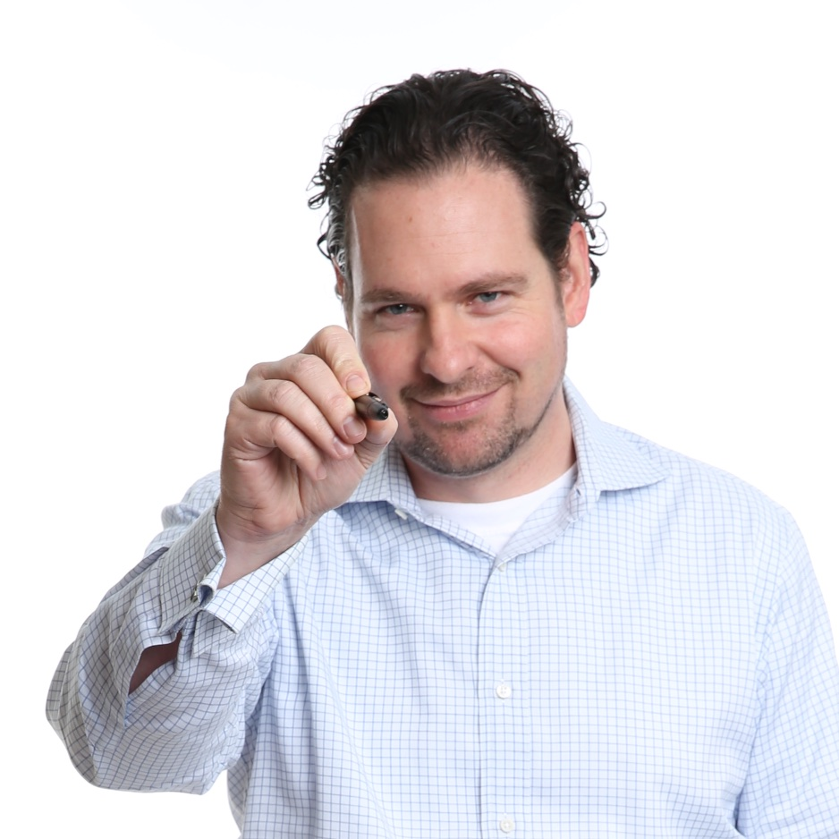

He didn’t just learn about startups from clients. He’s the rare lawyer and operator who is also a successful startup co-founder — starting as employee number one and building through multiple rounds of institutional financing. Michael Nichols is a Silicon Valley-based attorney with over 20 years of experience advising technology companies at the intersection of law, business, and regulation.
In 2010, Michael joined HealthTap as its first employee and co-founder — a digital health company that would go on to become a World Economic Forum Technology Pioneer and one of the leading virtual care platforms in the United States, connecting consumers and enterprise clients with a network of 150,000 U.S. physicians.
For eight years, he served simultaneously as General Counsel, Chief Privacy Officer, and Operations Lead. He wasn’t just the lawyer in the room. He was a member of the founding team making product decisions, building teams, negotiating partnerships, managing compliance, and closing deals. He closed multiple rounds of financing from Seed through Series C, with backing from Khosla Ventures, the Mayfield Fund, Eric Schmidt, and other leading institutional investors.
Michael is a founding board member of Stanford Alumni in AI — a network of Stanford graduates working at the intersection of artificial intelligence and industry. That affiliation reflects both his academic roots and his active engagement with the AI landscape that defines so much of his current practice.
That experience fundamentally shaped how he practices law. When he advises a founder on a term sheet, he knows what it feels like to be on the other side of the table. When he recommends a governance structure, he understands the operational reality of maintaining it. This is what “founder-first counsel” actually means. Not a lawyer who uses startup-friendly language. An attorney who has held a P&L, managed a team, and made the calls that determine whether a company survives its growth.
A full-stack practice offering corporate, commercial, and regulatory counsel to funded companies in health tech, AI, and fintech.
Lead commercial counsel at a $4.2B health technology company operating a national Virtual Cancer Clinic and testing services across cancer screening, diagnostics, and care delivery.
Joined as employee number one and helped build HealthTap into a leading digital health platform, serving simultaneously as General Counsel, Chief Privacy Officer, and Operations Lead for eight years. The full-stack experience of building, financing, and operating a company at scale is the foundation of how this practice works.
BigLaw foundation in IP, commercial disputes, and securities investigations. The litigation and negotiation skills developed here inform transactional and advisory work today.
Commercial litigation across intellectual property, contract, and business disputes. Grounded in understanding how disputes arise and actually get resolved.
The best lawyers help companies move faster by getting the right things right early. Not by building walls around every decision.
Most of what breaks in a priced round or a strategic acquisition was foreseeable. The companies that close clean deals built clean foundations — usually with counsel who knew what investors would actually scrutinize.
Companies that build thoughtful governance frameworks now will have a structural advantage as AI regulation matures. The standard of care is shifting — faster than most realize.
Whether you need a strategic engagement or a specific transaction handled right, let’s start with a conversation.